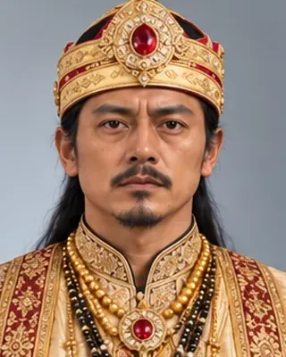

27 August 1714
শিৱ সিংহ
1714–1744 · Thirty-first Ahom king

A devout Shakta who gave land to temples and Brahmins and shared royal authority with his queens, who ruled in turn as Bar Raja. A golden age of Assamese manuscripts.
Record confidence: high.
27 August 1714

c. 1714–1720s

1722

c. 1725

c. 1730

1734

1734

c. 1735–1740

1739